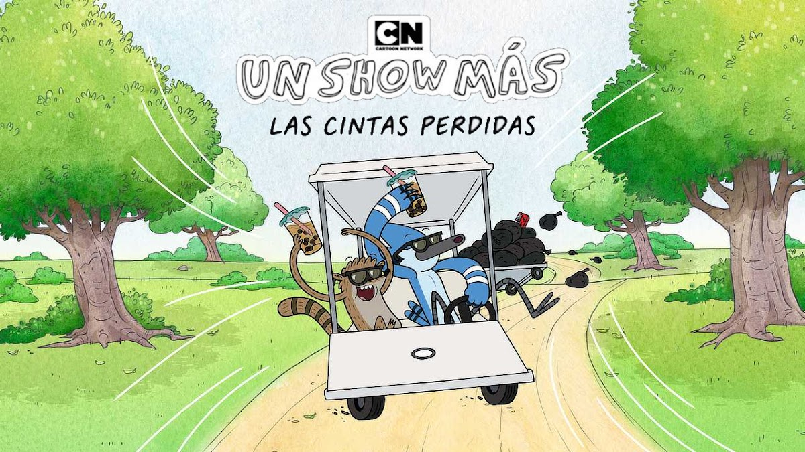

Una cinta VHS rota necesita que la reparen.
Skips organiza un luau que se sale de control.
Benson aprende una mejor manera de motivar a los empleados del parque.
Un lugar secreto para siestas causa grandes problemas.